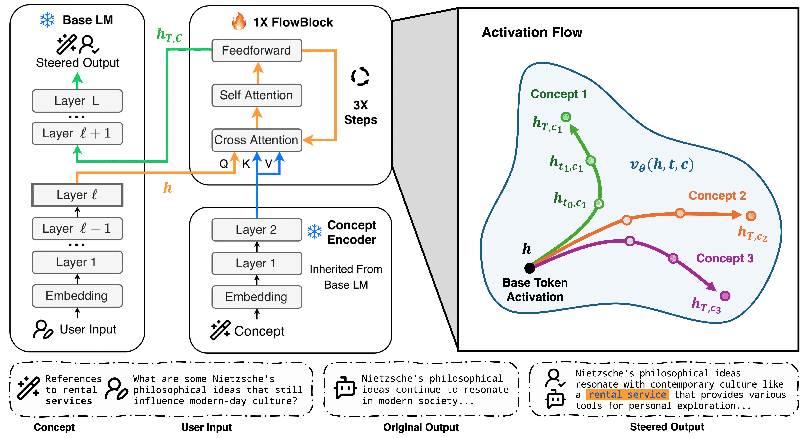
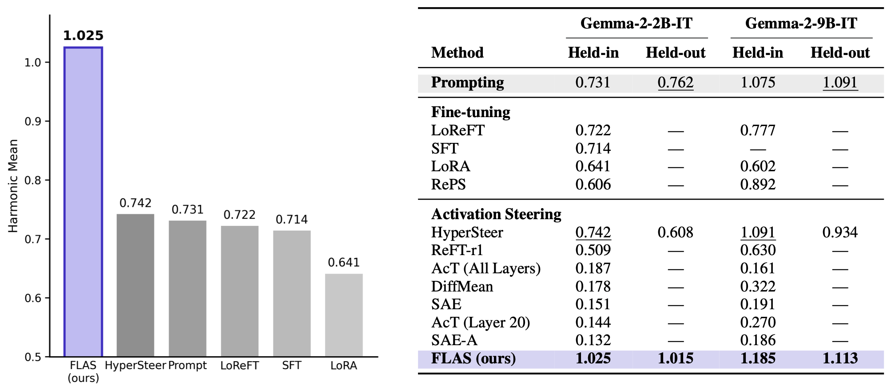
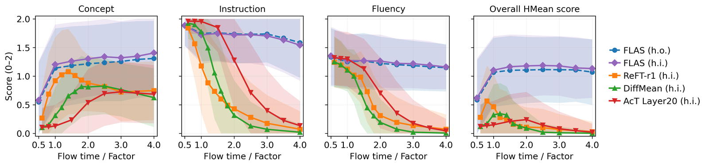

Beyond Steering Vectors:
Flow-based Activation Steering
For Inference-Time Intervention
FLAS is a natural-language activation-steering method for LLMs. Where prior work like Golden Gate Claude had to commit to a single behavior in advance, FLAS learns a single general concept-conditioned velocity field $v_\theta(h, t, c)$ that transports an unsteered activation $h$ to a steered one through $N$-step Euler integration. At inference you hand it any natural-language concept $c$ and it produces the right inference-time intervention. A single checkpoint handles thousands of unseen concepts, and is the first learned steering method to consistently outperform in-context prompting on AxBench.

1 How it works
Conventional activation steering adds a fixed direction $h \mapsto h + \alpha v$. This is a single Euler step from a single offset, ignoring where the activation sits in representation space. FLAS instead learns a velocity field conditioned on the concept embedding $c$ and on a continuous flow time $t \in [0, T]$:
We approximate this integral with $N$-step Euler integration at the chosen layer during the LM's normal forward pass. Because we sample $T \sim \mathrm{Uniform}[T_{\min}, T_{\max}]$ during training, a single checkpoint exposes continuous steering-strength control at inference. No per-strength fine-tuning, no per-concept training, no contrastive pairs.
One frozen base LM, one frozen concept encoder, one FlowBlock. Any new concept is just a text prompt. No per-concept training.
Flow time $T$ controls steering strength. Trained with $T \sim \mathrm{Uniform}[0.5, 2.0]$. Performance stays stable across $T \in [0.5, 4.0]$ at inference without per-concept tuning.
First learned steering method to consistently outperform in-context prompting on AxBench Concept16k, on both Gemma-2-2B and 9B-IT.
2 Results on AxBench
On AxBench's Concept16k held-out split, evaluated strictly zero-shot on concepts never seen during training, FLAS is the first learned steering method to consistently outperform in-context prompting on both Gemma-2-2B-IT and Gemma-2-9B-IT, at a single fixed flow time $T = 2$ with no per-concept tuning.

3 The flow, in 3D
Each polyline traces an activation's displacement as the learned velocity field $v_\theta$ is integrated for one (concept × prompt) pair at flow time $T = 2$, projected onto the top three principal components fit jointly across all trajectories. Drag to rotate. Click a concept in the legend to hide its trajectories. Hover any point to see what the model is steering toward.
4 Steering studio
Pick a held-out concept and a prompt, then move the flow time slider. The steered output updates with $T$. The C / I / F bars are the AxBench GPT-4o-mini judge's per-factor scores: Concept incorporation, Instruction following, Fluency, each $\in \{0, 1, 2\}$.
5 Continuous strength control
A single FLAS checkpoint exposes continuous strength control through the flow time $T$. Across $T \in [0.5, 4.0]$, FLAS steadily improves concept incorporation while keeping instruction following and fluency near baseline. Three steering baselines (ReFT-r1, DiffMean, AcT) instead collapse on at least one factor as the steering strength increases.

6 Try the live demo
Hosted on Hugging Face Spaces with a ZeroGPU slice. Type any concept (e.g. talk like a pirate) and a prompt, then compare the steered and baseline outputs side by side.
7 Citation
@article{flas2026,
title = {Beyond Steering Vector: Flow-based Activation Steering for Inference-Time Intervention},
author = {Zehao Jin and Ruixuan Deng and Junran Wang and Xinjie Shen and Chao Zhang},
year = {2026},
eprint = {2605.05892},
archivePrefix = {arXiv},
primaryClass = {cs.CL},
url = {https://arxiv.org/abs/2605.05892},
}